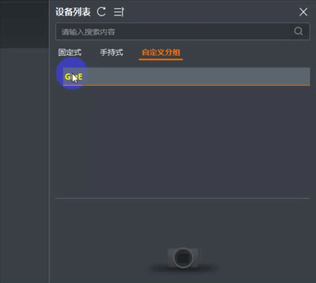

客户端支持对设备列表处发现的设备进行分组。复杂的读码场景中可能需要多台读码器协同工作，此时您可以根据使用场景或工作任务将读码器分组，便于整体的协调和控制。
-
在设备列表中单击自定义分组页签，之后右键单击，即可新建读码器分组。
- 可选操作：
右键单击目标分组名称，可重命名或删除分组。

图 1 新建/重命名/删除分组
-
切换到各类读码器页签，右键单击读码器，鼠标悬浮在移入分组即可选择分组名，将读码器移入该分组。
说明
移入分组后的读码器仅支持在自定义分组页签查看。
- 可选操作：
在自定义分组页签，右键单击读码器并选择移出分组，可将已分组的读码器移回原页签。